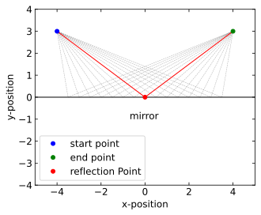
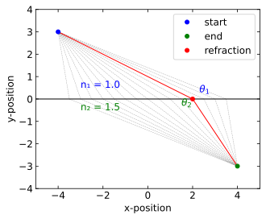
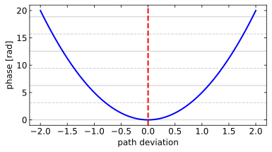
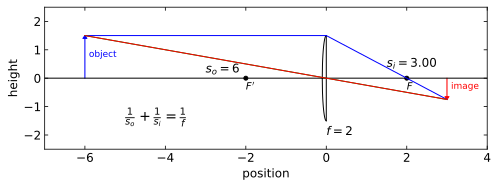
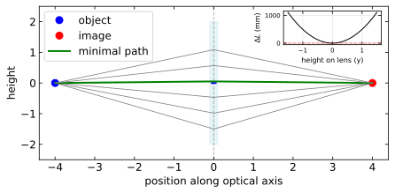

Ray optics, or geometric optics, provides a powerful framework for understanding light propagation when the wavelength is much smaller than the dimensions of optical elements involved. In this approach, light travels along straight lines called rays in homogeneous media, with well-defined paths that can be mathematically traced. This description serves as the foundation for analyzing many optical systems, from simple mirrors to complex microscopes and telescopes.
The cornerstone of ray optics is Fermat’s Principle, which states that light follows the path that minimizes the optical path length or, equivalently, the time of travel between two points. Mathematically, if we consider a path \(C\) connecting points A and B, Fermat’s Principle requires:
\[\delta\int_C n(s)ds = 0\]
where \(n(s)\) is the refractive index along the path and \(ds\) is the differential path length. This variational principle leads directly to the laws of reflection and refraction.
Code
def calculate_path_length(x, start, end):"""Calculate the total path length from start to point x to end""" d1 = np.sqrt((x - start[0])**2+ (start[1])**2) d2 = np.sqrt((end[0] - x)**2+ (end[1])**2)return d1 + d2# Set up the figurefig, ax = plt.subplots(figsize=get_size(15, 10))# Define start and end pointsstart_point = (-4, 3)end_point = (4, 3)# X positions for different possible pathsx_positions = np.linspace(-3.5, 3.5, 15)# Calculate path lengthspath_lengths = [calculate_path_length(x, start_point, end_point) for x in x_positions]# Find the minimum path (Fermat's principle)min_index = np.argmin(path_lengths)min_x = x_positions[min_index]# Plot the horizontal line (interface)ax.axhline(y=0, color='black', linestyle='-', linewidth=1)# Plot all possible pathsfor i, x inenumerate(x_positions):if i == min_index:continue# Skip the minimum path for now# Create path verts = [ start_point, (x, 0), end_point ] codes = [ Path.MOVETO, Path.LINETO, Path.LINETO ] path = Path(verts, codes) patch = patches.PathPatch(path, facecolor='none', edgecolor='gray', linestyle='--', lw=0.5,alpha=0.65) ax.add_patch(patch)# Plot the minimum path (Fermat's Principle)verts = [ start_point, (min_x, 0), end_point]codes = [ Path.MOVETO, Path.LINETO, Path.LINETO]path = Path(verts, codes)patch = patches.PathPatch(path, facecolor='none', edgecolor='red', linestyle='-')ax.add_patch(patch)# Add dots for the pointsax.plot(start_point[0], start_point[1], 'bo', label='start point')ax.plot(end_point[0], end_point[1], 'go', label='end point')ax.plot(min_x, 0, 'ro', label='reflection Point')# Set labels and titleax.set_xlabel('x-position')ax.set_ylabel('y-position')ax.text(-0.7, -1, "mirror")# Set plot limits and legendax.set_xlim(-5, 5)ax.set_ylim(-4, 4)ax.set_aspect('equal')ax.legend()plt.tight_layout()plt.show()

Figure 1— Fermat’s principle for reflection of light at an interface
Reflection For reflection at a planar interface, we can derive the law of reflection by considering a ray traveling from point A to point B via reflection at point P on a mirror. The total path length is \(L = |AP| + |PB|\). According to Fermat’s Principle, the actual path minimizes \(L\), so we set:
\[\frac{dL}{dx} = 0\]
where \(x\) is the position of P. After calculus manipulation, this yields the familiar law of reflection:
\[\theta_i = \theta_r\]
where \(\theta_i\) is the angle of incidence and \(\theta_r\) is the angle of reflection, both measured from the normal to the surface.
Code
def calculate_optical_path(x, start, end, n1, n2):"""Calculate the total optical path length from start to point x to end""" d1 = n1 * np.sqrt((x - start[0])**2+ (start[1])**2) # Optical path in medium 1 d2 = n2 * np.sqrt((end[0] - x)**2+ (end[1])**2) # Optical path in medium 2return d1 + d2# Set up the figurefig, ax = plt.subplots(figsize=get_size(15, 10))# Define start and end pointsstart_point = (-4, 3)end_point = (4, -3)# Define refractive indicesn1 =1.0# Medium 1 (above interface)n2 =1.5# Medium 2 (below interface)# X positions for different possible pathsx_positions = np.linspace(-3.5, 3.5, 15)# Calculate optical path lengthsoptical_paths = [calculate_optical_path(x, start_point, end_point, n1, n2) for x in x_positions]# Find the minimum path (Fermat's principle)min_index = np.argmin(optical_paths)min_x = x_positions[min_index]# Plot the horizontal line (interface)ax.axhline(y=0, color='black', linestyle='-', linewidth=1)# Plot all possible pathsfor i, x inenumerate(x_positions):if i == min_index:continue# Skip the minimum path for now# Create path verts = [ start_point, (x, 0), end_point ] codes = [ Path.MOVETO, Path.LINETO, Path.LINETO ] path = Path(verts, codes) patch = patches.PathPatch(path, facecolor='none', edgecolor='gray', linestyle='--', lw=0.5, alpha=0.65) ax.add_patch(patch)# Plot the minimum path (Fermat's Principle)verts = [ start_point, (min_x, 0), end_point]codes = [ Path.MOVETO, Path.LINETO, Path.LINETO]path = Path(verts, codes)patch = patches.PathPatch(path, facecolor='none', edgecolor='red', linestyle='-', lw=1)ax.add_patch(patch)# Add dots for the pointsax.plot(start_point[0], start_point[1], 'bo', label='start')ax.plot(end_point[0], end_point[1], 'go', label='end')ax.plot(min_x, 0, 'ro', label='refraction')# Calculate and draw angles# Incident raydx1 = min_x - start_point[0]dy1 =0- start_point[1]incident_angle = np.arctan2(-dy1, dx1)theta1 = np.pi/2- incident_angle# Refracted raydx2 = end_point[0] - min_xdy2 = end_point[1] -0refracted_angle = np.arctan2(dy2, dx2)theta2 = np.pi/2+ refracted_angle# Draw angle arcs# Add angle labelsax.text(min_x +0.3, 0.3, r'$\theta_1$', color='blue')ax.text(min_x -0.5, -0.3, r'$\theta_2$', color='green')# Set labels and titleax.set_xlabel('x-position')ax.set_ylabel('y-position')ax.text(-3, 0.5, f"n₁ = {n1}", color='blue')ax.text(-3, -0.5, f"n₂ = {n2}", color='green')# Set plot limits and legendax.set_xlim(-5, 5)ax.set_ylim(-4, 4)ax.set_aspect('equal')ax.legend()plt.tight_layout()plt.show()

Figure 2— Snell’s Law from Fermat’s Principle
Destructive Interference of Non-Minimal Paths
We can demonstrate that all paths except the shortest one interfere destructively using Feynman’s path integral formulation. In this approach, light takes all possible paths between points A and B, with each path contributing an amplitude with phase \(e^{iS/\hbar}\), where \(S\) is the action proportional to the optical path length: \(S = kL\) where \(k = 2\pi/\lambda\) is the wave number.
To understand why non-minimal paths cancel out, let’s denote the minimal path as \(x_0(t)\) and nearby paths as \(x_0(t) + \delta x(t)\), where \(\delta x(t)\) represents small deviations. The action for these perturbed paths expands as: \[S[x_0 + \delta x] = S[x_0] + \frac{\delta S}{\delta x}\bigg|_{x_0} \delta x + \frac{1}{2}\frac{\delta^2 S}{\delta x^2}\bigg|_{x_0} (\delta x)^2 + ...\]
Since \(x_0\) is the extremal path (according to Fermat’s principle), we have \(\frac{\delta S}{\delta x}\bigg|_{x_0} = 0\). This means the first-order term vanishes, leaving the quadratic term as the leading contribution to the phase difference:
This quadratic dependence is crucial: as we move away from the minimal path, the phase difference increases as the square of the deviation \(\delta x\). When we consider a specific deviation \(\delta x_c\) where \(\Delta\phi = \pi\), paths will contribute with exactly opposite phases compared to the minimal path, leading to destructive interference:
For even larger deviations, the phase differences continue to increase, creating alternating bands of constructive and destructive interference. When summed over all possible paths, these rapidly varying phases cancel each other out.
For paths far from the minimal one, the destructive interference is even more pronounced. Mathematically, we can demonstrate this by considering a continuous distribution of paths with optical path lengths \(L\). The total amplitude contribution from these paths is given by:
\[A = \int e^{ikL(x)} dx\]
For non-minimal paths, we can parametrize the path length as \(L(x) = L_0 + \alpha(x-x_0)^2\) for some constant \(\alpha\), where \(x_0\) corresponds to the minimal path. The amplitude becomes:
The key insight is that the amplitude scales as \(1/\sqrt{k\alpha}\), which means that as the curvature \(\alpha\) of the path length function increases (as happens far from the minimal path), the contribution to the total amplitude diminishes. This mathematically proves why non-minimal path regions contribute negligibly to the overall path integral.
This cancellation mechanism explains why light appears to follow only the path of least time in ray optics. The mathematics shows that constructive interference occurs only for paths very close to the minimal path, while all other paths destructively interfere with their neighbors. This phenomenon emerges naturally from wave properties without requiring quantum mechanical constants like ℏ. We can express this classically by setting \(S = kL\) and observing how path differences relative to the wavelength create interference patterns.
Code
from matplotlib import cm# Parametersnum_paths =100min_path_index = num_paths //2path_deviation = np.linspace(-2, 2, num_paths) # Deviation from minimal pathalpha =5# Curvature parameter controlling phase variation rate# Calculate phase for each path (quadratic dependence on deviation)phases = alpha * path_deviation**2# Set up the figurefig, ax = plt.subplots(figsize=get_size(14, 8))# Plot phase vs path deviation with a simple blue line and pointsax.plot(path_deviation, phases, '-', color='blue', linewidth=2)# Highlight the minimal pathax.axvline(x=0, color='r', linestyle='--', linewidth=2, label='Minimal path')# Highlight paths near minimal pathnear_minimal = np.abs(path_deviation) <0.3#ax.scatter(path_deviation[near_minimal], phases[near_minimal],# color='green', s=70, label='Near minimal path', zorder=3)# Set labels and gridax.set_xlabel('path deviation')ax.set_ylabel('phase [rad]')# Add horizontal lines at multiples of π to show constructive/destructive interferencefor i inrange(int(np.max(phases)/np.pi) +1):if i ==0: ax.axhline(y=i*np.pi, color='k', linestyle='-', alpha=0.2, label='Constructive interference')elif i %2==0: ax.axhline(y=i*np.pi, color='k', linestyle='-', alpha=0.2)else: ax.axhline(y=i*np.pi, color='k', linestyle='--', alpha=0.2, label='Destructive interference'if i==1elseNone)plt.tight_layout()plt.show()

Figure 3— Visualization of path phases in Fermat’s principle. The figure shows how the phase varies with path deviation from the minimal path (marked by the vertical red line at zero). The quadratic relationship between phase and path deviation demonstrates why paths near the minimal one constructively interfere (similar phases), while non-minimal paths tend to cancel through destructive interference (rapidly varying phases).
Refraction Similarly, for refraction between two media with refractive indices \(n_1\) and \(n_2\), the optical path length is:
\[L = n_1|AP| + n_2|PB|\]
Applying Fermat’s Principle and solving the resulting equation leads to Snell’s law:
\[n_1\sin\theta_1 = n_2\sin\theta_2\]
where \(\theta_1\) and \(\theta_2\) are the angles of incidence and refraction, respectively.
These fundamental laws allow us to analyze the formation of images by various optical systems. For instance, in a thin lens with focal length \(f\), we can establish the relationship between object distance \(s_o\), image distance \(s_i\), and focal length through the lens equation:
\[\frac{1}{s_o} + \frac{1}{s_i} = \frac{1}{f}\]
This equation enables us to predict image formation characteristics in optical instruments such as cameras, microscopes, and telescopes.
Despite its power, ray optics has limitations. It cannot explain phenomena like diffraction, which occurs when light encounters obstacles or apertures comparable to its wavelength. Here, we need wave optics for a complete description. Additionally, ray optics fails to account for the finite width of beams and the existence of evanescent waves.
Code
# Set up the figurefig, ax = plt.subplots(figsize=get_size(18,7))# Define lens parametersf =2# focal lengthh_obj =1.5# object heights_o =6# object distances_i =1/(1/f -1/s_o) # image distance from lens formulah_img =-h_obj * s_i/s_o # image height# Plot optical axisax.axhline(y=0, color='black', linestyle='-')# Plot lenslens_height =3ax.plot([0, 0], [-lens_height/2, lens_height/2], 'k-')# Add curved edges to represent a lenscurve_x = np.linspace(-0.1, 0, 20)curve_y1 = lens_height/2* np.sqrt(1- (curve_x/0.1)**2)curve_y2 =-lens_height/2* np.sqrt(1- (curve_x/0.1)**2)ax.plot(curve_x, curve_y1, 'k-')ax.plot(curve_x, curve_y2, 'k-')# Plot focal pointsax.plot(f, 0, 'ko', markersize=4)ax.plot(-f, 0, 'ko', markersize=4)ax.text(f, -0.4, r'$F$', fontsize=10)ax.text(-f, -0.4, r"$F'$", fontsize=10)# Plot object and imageax.arrow(-s_o, 0, 0, h_obj-0.1, head_width=0.1, head_length=0.1, fc='blue', ec='blue')ax.arrow(s_i, 0, 0, h_img+0.1, head_width=0.1, head_length=0.1, fc='red', ec='red')ax.text(-s_o+0.1, h_obj/2, r'object', color='blue', fontsize=9)ax.text(s_i+0.1, h_img/2, r'image', color='red', fontsize=9)# Principal rays# Ray 1: Parallel to axis, through focal pointax.plot([-s_o, 0], [h_obj, h_obj], 'b-', label='parallel to axis → through F')ax.plot([0, s_i], [h_obj, h_img], 'b-')# Ray 2: Through center, unchanged directionax.plot([-s_o, s_i], [h_obj, h_img], 'g-', label='through center')# Ray 3: Through focal point, parallel to axisax.plot([-s_o, 0], [h_obj, 0], 'r-', label='through F → parallel to axis')ax.plot([0, s_i], [0, h_img], 'r-')# Add lens equationequation_text =r"$\frac{1}{s_o} + \frac{1}{s_i} = \frac{1}{f}$"ax.text(-5, -1.5, equation_text, fontsize=14, bbox=dict(facecolor='white', lw=0, alpha=0.7))# Labels showing valuesax.text(-s_o/2, 0.2, f"$s_o = {s_o}$")ax.text(s_i/2, 0.4, f"$s_i = {s_i:.2f}$")ax.text(0, -2, f"$f = {f}$")# Set plot limits and aspect ratioax.set_xlim(-s_o-1, s_i+1)ax.set_ylim(-2.5, 2.5)#ax.set_aspect('equal')# Axis labelsax.set_xlabel('position')ax.set_ylabel('height')# Add legend for principal rays#ax.legend(loc='upper center', bbox_to_anchor=(0.5, -0.15), ncol=3, fontsize=8)plt.tight_layout()plt.show()

Figure 4— Ray diagram for a thin lens showing object and image formation
Differential Description of Fermat’s Principle
While we’ve discussed Fermat’s principle in its integral form, it can also be expressed as a differential equation that describes the path of light rays. This approach reveals how ray trajectories emerge from the underlying variational principle.
Starting with Fermat’s principle that light follows the path of least optical path length:
\[\delta\int_C n(s)ds = 0\]
We can derive the differential equation governing the ray path. If we parametrize the ray path as \(\mathbf{r}(s)\) where \(s\) is the arc length, then the ray equation becomes:
This equation states that the rate of change of the momentum vector (\(n\frac{d\mathbf{r}}{ds}\)) equals the gradient of the refractive index. In a medium with constant refractive index (\(\nabla n = 0\)), this simplifies to:
\[\frac{d^2\mathbf{r}}{ds^2} = 0\]
This confirms that light rays follow straight lines in homogeneous media.
For a medium with a continuously varying refractive index \(n(x,y,z)\), the ray equation becomes:
This differential form of Fermat’s principle is particularly useful in gradient-index optics, where the refractive index changes continuously throughout the medium, causing light rays to follow curved paths. Examples include optical fibers with graded-index profiles and the atmosphere where temperature gradients create mirages.
Deriving the Differential Form from the Integral Principle
To derive the differential ray equation from Fermat’s integral principle, we apply the calculus of variations. Starting with the optical path length functional:
Where \(\mathbf{r}(t)\) parametrizes the path. The term \(\left|\frac{d\mathbf{r}}{dt}\right|\) represents the differential element of arc length \(ds\) along the path, so \(ds = \left|\frac{d\mathbf{r}}{dt}\right| dt\). This parametrization allows us to convert the path integral over the curve \(C\) into a definite integral over the parameter \(t\). According to Fermat’s principle, the true path makes this integral stationary (δL = 0).
Consider a small variation in the path: \(\mathbf{r}(t) \rightarrow \mathbf{r}(t) + \epsilon\mathbf{\eta}(t)\) where \(\mathbf{\eta}(t_1) = \mathbf{\eta}(t_2) = 0\) (fixed endpoints). Expanding the variation of the integral to first order in ε:
Using the chain rule and reparametrizing with arc length \(s\) (where \(\frac{d\mathbf{r}}{ds}\) is a unit vector), the stationarity condition leads to:
This is the ray equation in differential form. It shows that rays bend toward regions of higher refractive index, directly analogous to how a mechanical particle’s trajectory is affected by a potential field in classical mechanics.
Thin Lenses and Fermat’s Principle
We can show that a thin lens obeys Fermat’s principle by considering the optical path length for rays passing through different points of the lens. For a thin lens with a biconvex spherical surface of radius \(R\), the thickness \(d(y)\) varies with the distance \(y\) from the optical axis according to:
\[d(y) \approx d_0 - \frac{y^2}{2R}\]
where \(d_0\) is the thickness at the center. For a converging lens, the thickness decreases as we move away from the optical axis.
Let’s consider a ray from object point \(O\) passing through the lens at height \(y\) and reaching the image point \(I\). The total optical path length is:
where \(n_1\) is the refractive index of the surrounding medium (usually air, \(n_1 \approx 1\)) and \(n_2\) is the refractive index of the lens material.
Code
# Set up the figurefig, ax = plt.subplots(figsize=get_size(18, 8))# Define parametersf =2# focal lengthn_lens =1.5# refractive index of lensd0 =0.1# thickness at centerobject_distance =4image_distance =1/(1/f -1/object_distance) # from lens equation# Function to calculate optical path length through lens at height ydef optical_path(y, obj_dist, img_dist, n, d0, f):# Approximate lens thickness at height y d_y = d0 * (1+ y**2/(2*f*d0*(n-1)))# Distance from object to lens entry point d1 = np.sqrt(obj_dist**2+ y**2)# Distance from lens exit point to image d2 = np.sqrt(img_dist**2+ y**2)# Total path length (air + lens + air)return d1 + (n-1)*d_y + d2# Calculate optical paths for different heightsy_values = np.linspace(-1.5, 1.5, 30)path_lengths = [optical_path(y, object_distance, image_distance, n_lens, d0, f) for y in y_values]# Find minimum pathmin_index = np.argmin(path_lengths)path_diff = np.array(path_lengths) -min(path_lengths)# Plot lens shape (exaggerated for visibility)lens_width =0.2x_lens = np.linspace(-lens_width/2, lens_width/2, 100)y_lens = np.linspace(-2, 2, 100)XX, YY = np.meshgrid(x_lens, y_lens)lens_shape = d0 + YY**2/(2*f*d0*(n_lens-1))lens_shape = lens_shape * lens_width/lens_shape.max()# Draw lensax.fill_between([-lens_shape.max()/2, lens_shape.max()/2], [-2, -2], [2, 2], color='lightblue', alpha=0.3)ax.plot([-lens_width/4, lens_width/4], [0, 0], 'b-', linewidth=2) # Optical axis# Plot object and image pointsax.plot(-object_distance, 0, 'bo', markersize=8, label='object')ax.plot(image_distance, 0, 'ro', markersize=8, label='image')# Draw some example raysfor i, y inenumerate(y_values[::5]):if i ==len(y_values[::5])//2: # Highlight central ray color ='green' lw =2 label1 ='minimal path'else: color ='gray' lw =0.8 label1 =None# Draw ray from object through lens to image ax.plot([-object_distance, 0, image_distance], [0, y, 0], color=color, linewidth=lw, label=label1)# Plot optical path length vs height - moved to bottom-right corner with more roomax2 = ax.inset_axes([0.7, 0.75, 0.28, 0.22]) # Adjusted position and sizeax2.plot(y_values, path_diff *1000, 'k-') # Convert to mm for visibilityax2.set_xlabel('height on lens (y)', fontsize=8)ax2.set_ylabel(r'$\Delta L$ (mm)', fontsize=8)ax2.tick_params(axis='both', which='major', labelsize=7)ax2.grid(True, alpha=0.3)ax2.axhline(y=0, color='r', linestyle='--', alpha=0.5)# Set main plot propertiesax.set_xlim(-object_distance*1.1, image_distance*1.1)ax.set_ylim(-2.5, 2.5)ax.set_xlabel('position along optical axis')ax.set_ylabel('height')ax.axvline(x=0, color='k', linestyle='--', alpha=0.3) # Mark lens position#ax.text(0.5, 2, "n = " + str(n_lens))ax.legend(loc='upper left') # Moved legend to upper left to avoid overlapplt.show()

Figure 5— Demonstration of Fermat’s principle in a thin lens
Applying Fermat’s principle, we require that \(\frac{dL}{dy} = 0\) for the actual ray path. After differentiation and algebraic manipulation, we arrive at:
This is equivalent to the lens maker’s formula when combined with the small-angle approximation. The parabolic thickness profile of the lens ensures that all rays from the object point arrive at the image point with the same optical path length (to first order), satisfying Fermat’s principle.
The lens thus acts as a path equalizer - rays taking different paths through the lens all require the same travel time, which creates the focusing effect. This is why a properly designed lens can form a perfect image: it ensures constructive interference of all waves at the image point by making all optical paths equal.